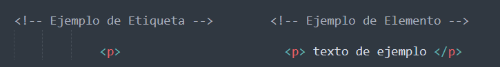

Una Etiqueta es la parte que define el inicio y el final de un componente de HTML y se delimita con los símbolos < y >. Mientras que los Elementos incluyen la etiqueta de opertura, el contenido y la etiqueta de cierre. Los elementos pueden contener algo adentro o simplemente estar vacíos.
El Anidamiento se refiere a colocar un elemento HTML dentro de otro elemento.
Es muy importante seguir el órden de las etiquetas: la primera que se abre es la última que se cierra.
Los Atributos en HTML son elementos que añaden información extra a las etiquetas de HTML para modificar el comportamiento o la apariencia. Estos Atributos siempre se colocan adentro de las etiquetas de opertura y siguen el formato: nombre ="valor".
Los Comentarios en HTML son líneas de texto que se añaden al código para dejar notas o explicaciones, pero NO SON VISIBLES para los usuarios finales en la página web.
Se utilizan para ayudar a los desarrolladores a documentar el código, describir secciones específicas o dejar indicaciones para futuros desarrolladores.
Los comentarios no afectan al rendimiento, funcionamiento y visualización de la página web en el navegador.